Environment · Terrain
Environment Geography
Terrain studies: mountains, coastlines and islands built with the eye of a geographer.
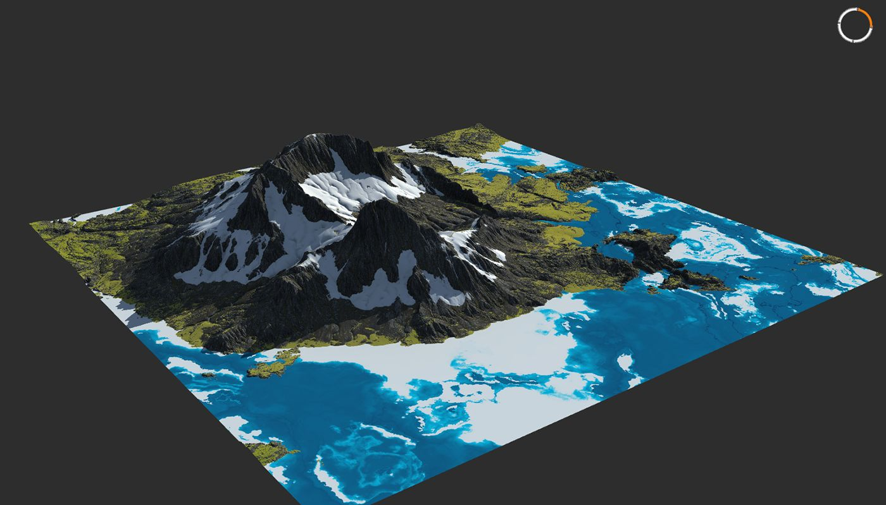
Made with


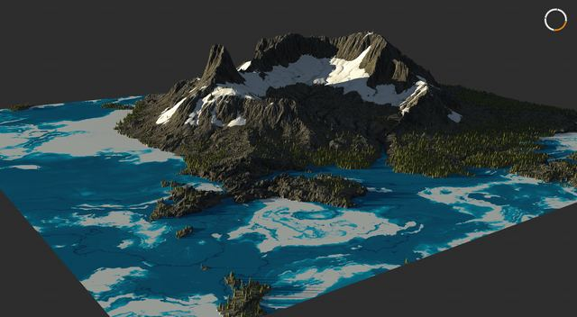

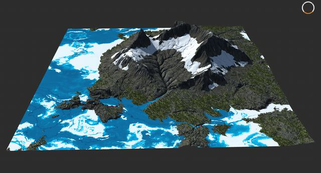

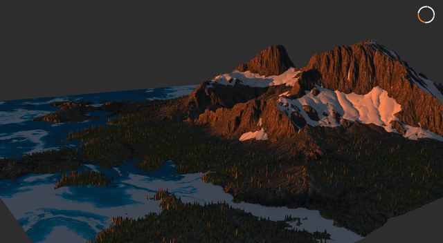

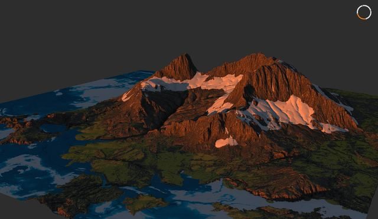

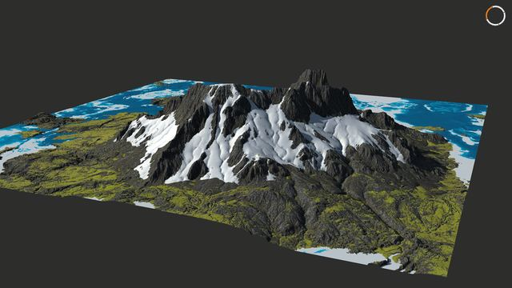

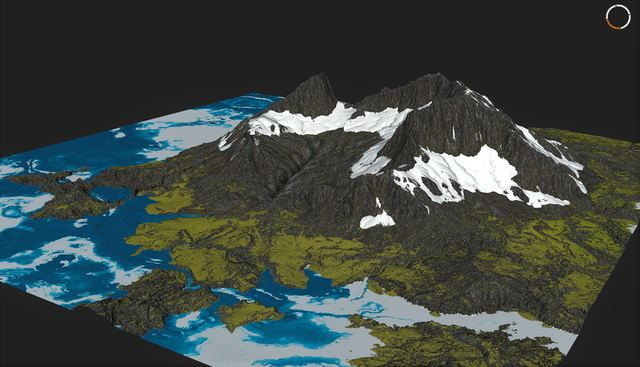

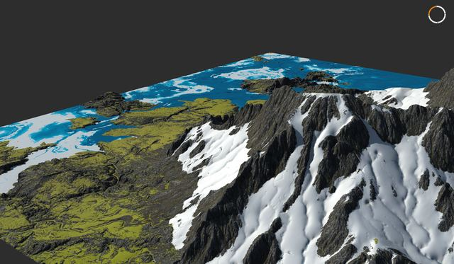

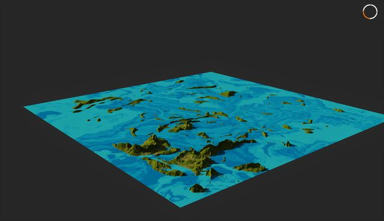

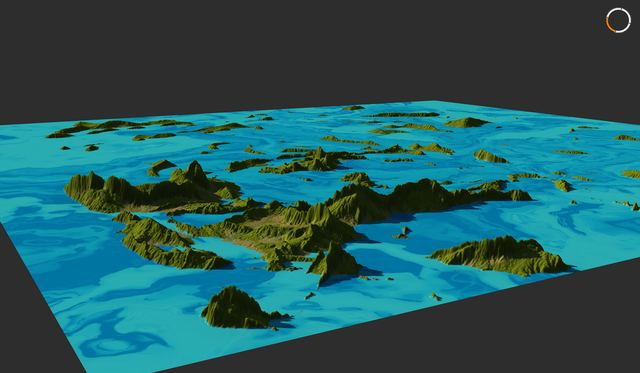

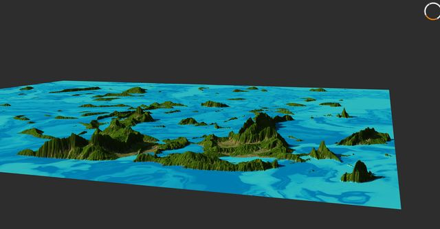

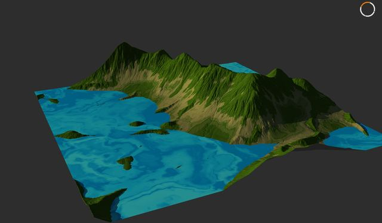

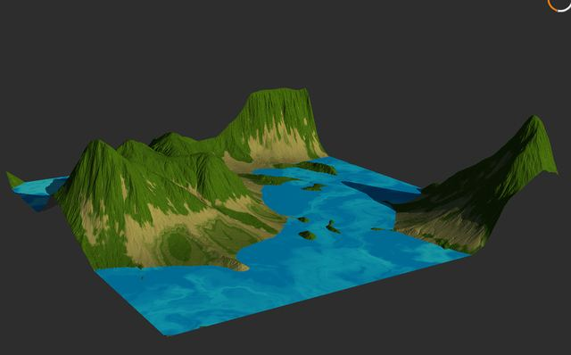

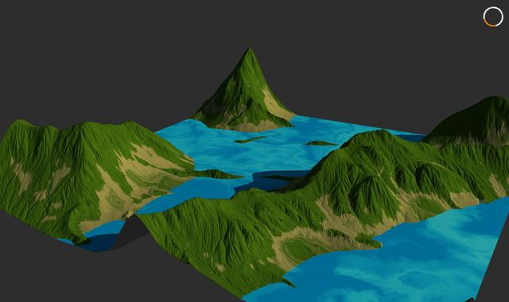

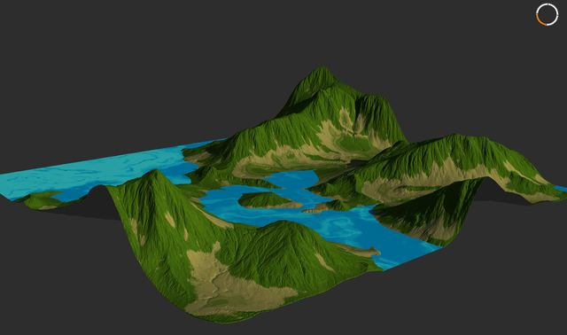

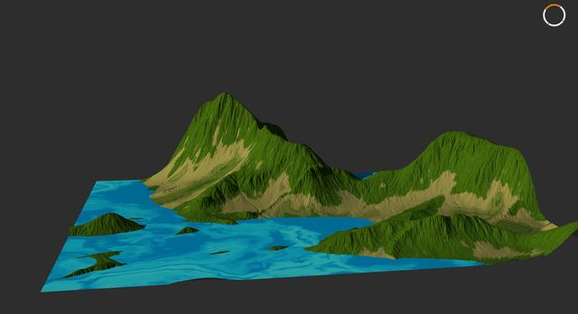

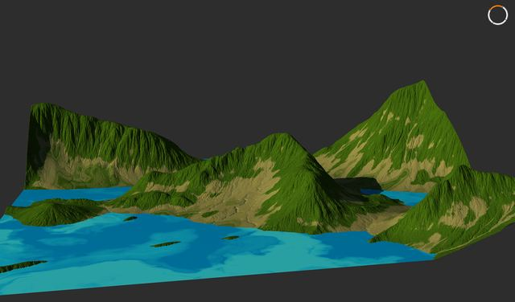

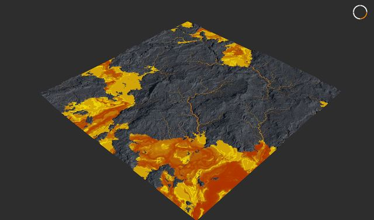

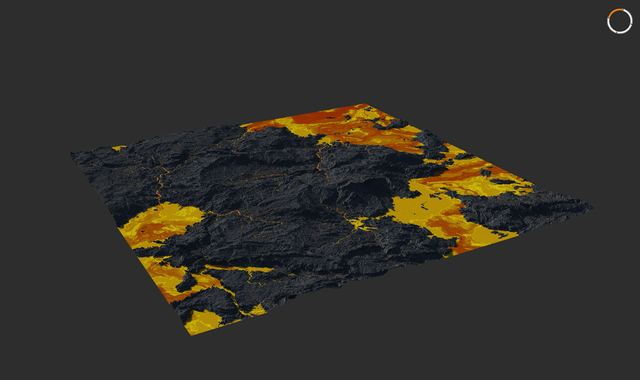

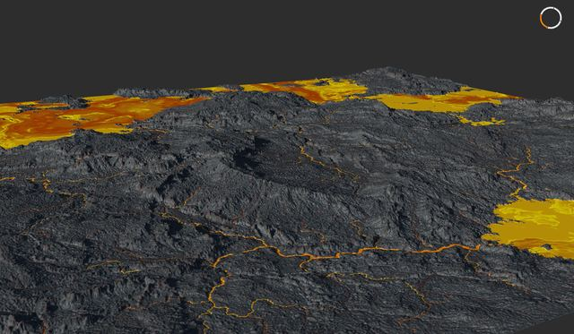

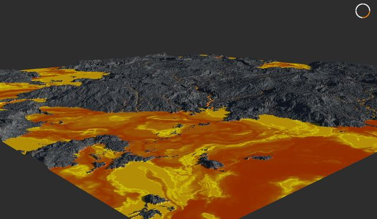

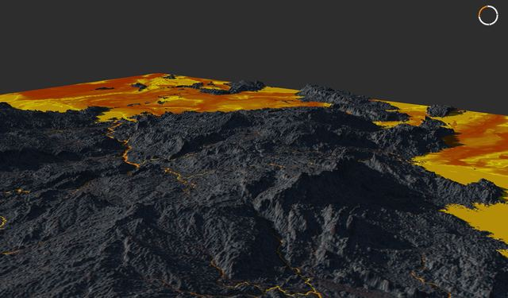

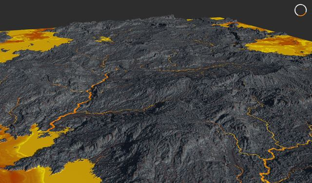

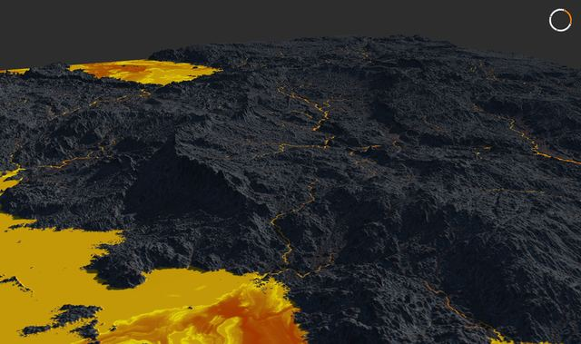

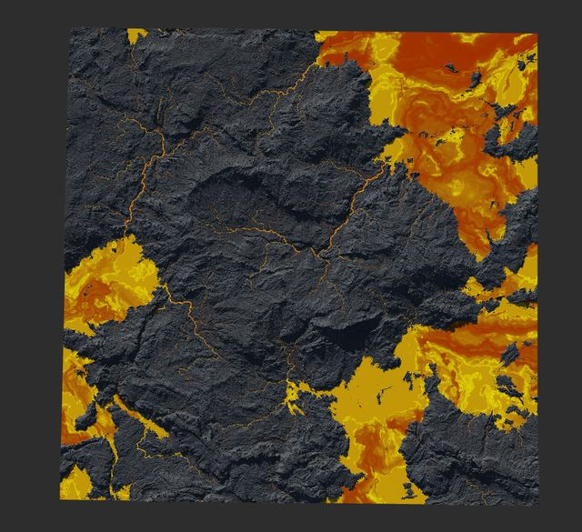

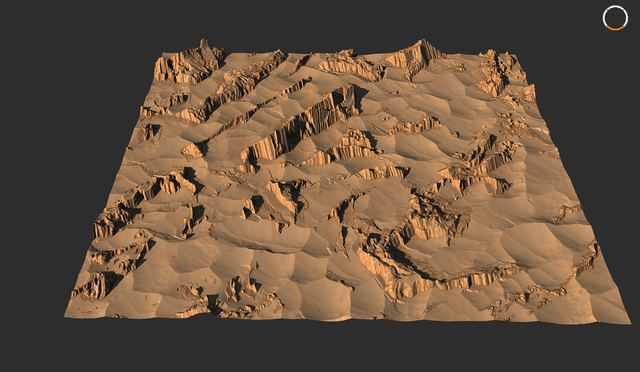

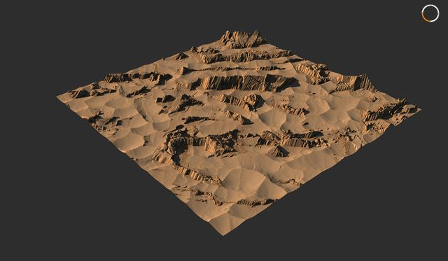

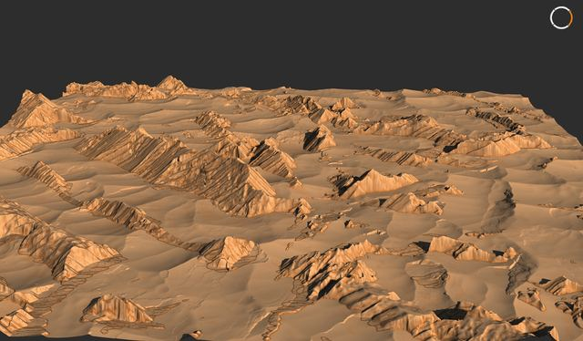

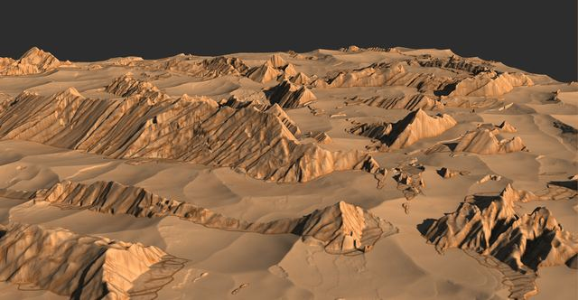

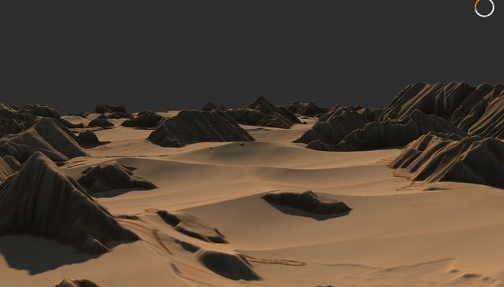

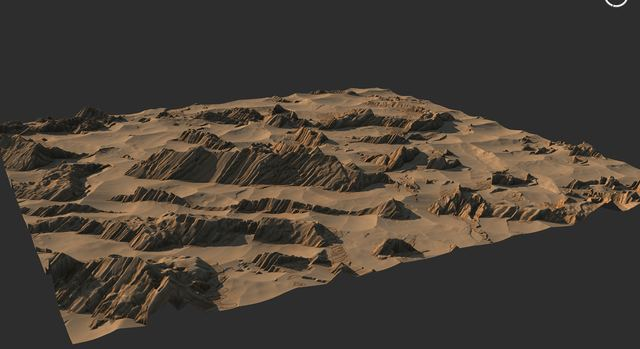

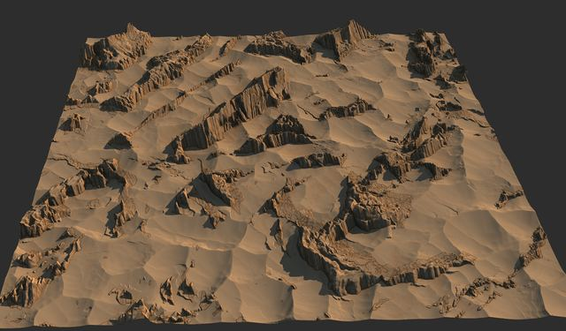

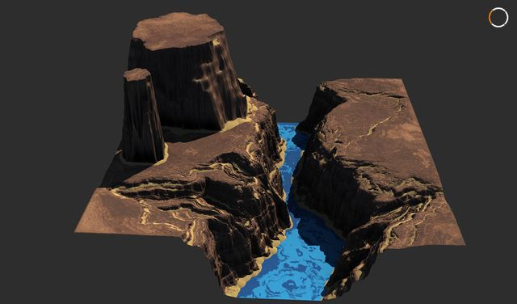

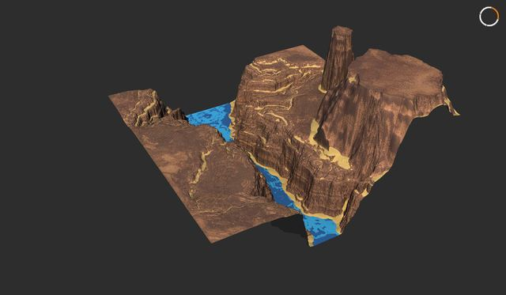

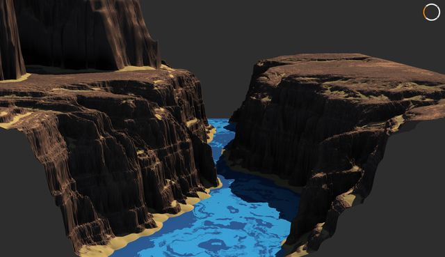

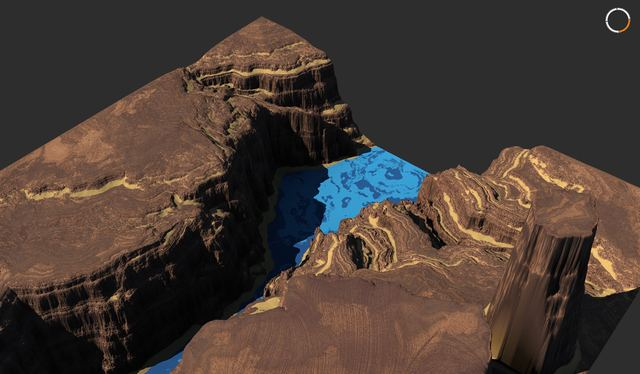

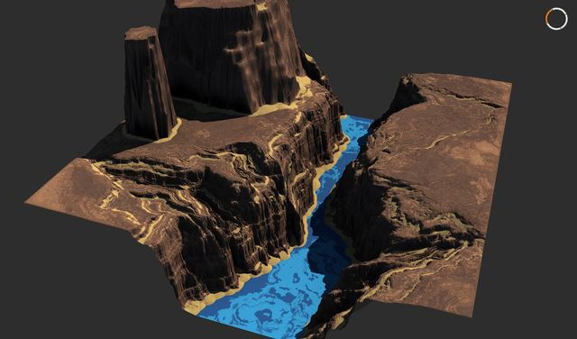

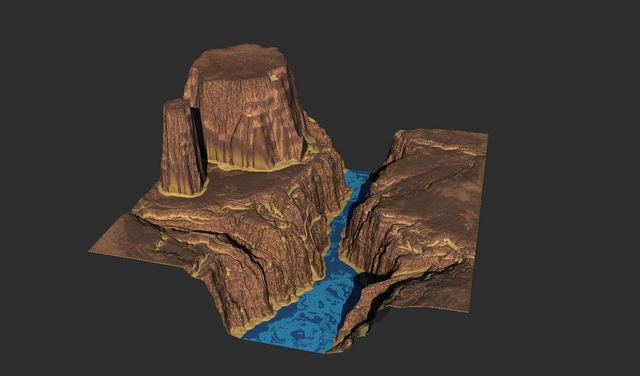